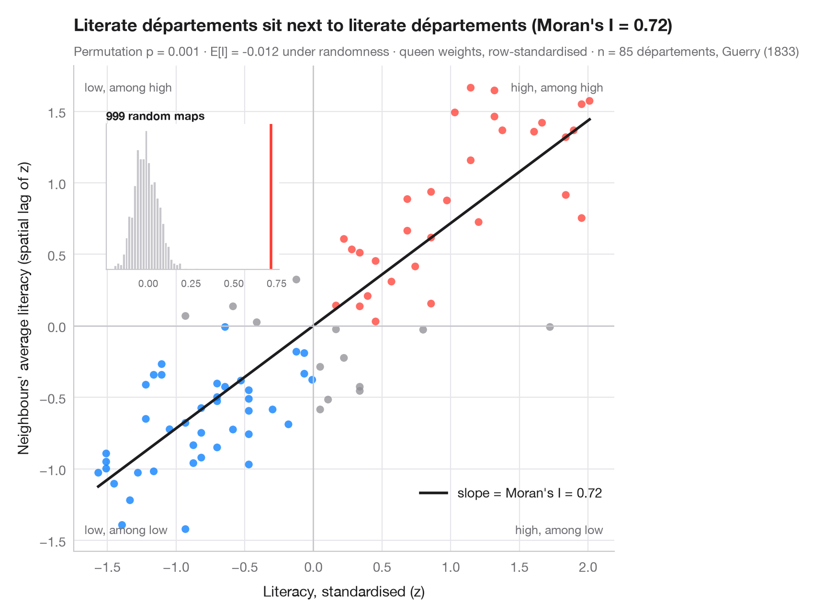

Diagramme de Moran (autocorrélation globale)
Chaque zone face à la moyenne de ses voisines, avec le I de Moran, son test par permutation et la distribution de référence.

L'autocorrélation spatiale globale pose une seule question pour toute la carte : les valeurs semblables sont-elles voisines plus souvent que le hasard ne le permettrait ? Le diagramme de Moran y répond visuellement. Chaque point est une zone : en abscisse sa propre valeur (standardisée), en ordonnée la moyenne de ses voisines — le décalage spatial. Avec des pondérations standardisées par ligne, la pente de la droite ajustée est exactement le I de Moran (Moran, 1950). Les points des quadrants en haut à droite et en bas à gauche sont des zones qui ressemblent à leurs voisines ; les deux autres quadrants contiennent les valeurs atypiques spatiales.
L'inférence se fait par permutation : les valeurs sont redistribuées au hasard sur la carte 999 fois et I est recalculé à chaque fois. L'encart montre cette distribution de référence sous l'hypothèse d'aléa spatial ; la pseudo-valeur p est la part des permutations au moins aussi extrêmes que le I observé. Les données sont les taux d'alphabétisation de Guerry (1833) pour 85 départements, chargés avec libpysal ; les pondérations sont de type reine et la statistique vient de esda.Moran.
Le code et le texte à l'intérieur des figures sont en anglais.
import geopandas as gpd
import matplotlib.pyplot as plt
import numpy as np
from esda.moran import Moran
from libpysal import examples, weights
# Data: literacy of military conscripts in 85 départements, c. 1830 (Guerry, 1833)
g = gpd.read_file(examples.load_example("Guerry").get_path("guerry.shp"))
y = g["Litercy"].to_numpy(dtype=float)
# Row-standardised queen weights, Moran's I with 999 permutations
w = weights.Queen.from_dataframe(g, use_index=False)
w.transform = "r"
mi = Moran(y, w, permutations=999)
z = (y - y.mean()) / y.std()
lag = weights.lag_spatial(w, z) # average of the neighbours' z-scores
fig, ax = plt.subplots(figsize=(8, 6.2))
quad = np.select([(z > 0) & (lag > 0), (z < 0) & (lag < 0)], ["#FF3B30", "#007AFF"], "#8E8E93")
ax.scatter(z, lag, s=34, c=quad, alpha=0.75, lw=0)
xs = np.array([z.min(), z.max()])
ax.plot(xs, mi.I * xs, color="#1D1D1F", lw=2, label=f"slope = Moran's I = {mi.I:.2f}")
ax.axhline(0, color="#C7C7CC", lw=1); ax.axvline(0, color="#C7C7CC", lw=1)
for (tx, ty, txt) in [(0.98, 0.97, "high, among high"), (0.02, 0.03, "low, among low"),
(0.02, 0.97, "low, among high"), (0.98, 0.03, "high, among low")]:
ax.text(tx, ty, txt, transform=ax.transAxes, ha="right" if tx > 0.5 else "left",
va="top" if ty > 0.5 else "bottom", fontsize=9, color="#6E6E73")
ax.set_xlabel("Literacy, standardised (z)")
ax.set_ylabel("Neighbours' average literacy (spatial lag of z)")
ax.grid(axis="x")
ax.legend(loc="lower right", bbox_to_anchor=(1, 0.08))
# Inset: reference distribution of I under spatial randomness
ins = ax.inset_axes([0.06, 0.58, 0.32, 0.3])
ins.hist(mi.sim, bins=30, color="#C7C7CC", edgecolor="white")
ins.axvline(mi.I, color="#FF3B30", lw=2)
ins.set_title("999 random maps", fontsize=8.5, loc="left", pad=3)
ins.tick_params(labelsize=7.5); ins.set_yticks([]); ins.grid(False)
ax.set_title(f"Literate départements sit next to literate départements (Moran's I = {mi.I:.2f})", pad=26)
ax.text(0, 1.02, f"Permutation p = {mi.p_sim:.3f} · E[I] = {mi.EI:.3f} under randomness · "
f"queen weights, row-standardised · n = {w.n} départements, Guerry (1833)",
transform=ax.transAxes, fontsize=9.5, color="#6E6E73")
plt.show()
Les figures utilisent le style PyStatlas (facultatif) : ajoutez plt.style.use("pystatlas.mplstyle") pour obtenir exactement le même rendu.
Source des données
- Guerry's moral statistics of France, c. 1830 (85 départements). Guerry, A.-M. (1833). Essai sur la statistique morale de la France. Crochard. Data as compiled in Friendly, M. (2007). A.-M. Guerry's moral statistics of France: Challenges for multivariable spatial analysis. Statistical Science, 22(3), 368–399. https://doi.org/10.1214/07-STS241
Prepared by the Center for Spatial Data Science (University of Chicago) from the R package Guerry (Friendly and Dray), provided “as is”. Fetched once and cached by libpysal (examples.load_example("Guerry")). Variables come from Guerry's tables as translated by Whitt and Reinking (2002).
Les exemples illustrent des méthodes statistiques. Leurs titres décrivent ce que chaque figure montre dans ces données précises — souvent un échantillon restreint, daté ou partiel —, et non la position de l'auteur sur la question de fond. Pour l'interprétation, le contexte et la qualité des données, reportez-vous aux sources originales citées ici.
Comment citer
PyStatlas est créé et maintenu par Thierry Warin. S'il vous a été utile dans vos travaux, merci de le citer.
Warin, T. (2026). Moran scatterplot (global autocorrelation). In PyStatlas: A Python Gallery of Statistical Graphics for the Social Sciences. https://warint.github.io/pystatlas/spatial-data/moran-scatterplot/
@misc{warin2026statlas,
author = {Warin, Thierry},
title = {PyStatlas: A Python Gallery of Statistical Graphics for the Social Sciences},
year = {2026},
howpublished = {\url{https://warint.github.io/pystatlas/}},
note = {Source code: https://github.com/warint/pystatlas}
}Plus dans Données spatiales

Carte choroplèthe avec pondérations spatiales
Une carte d'une variable avec, par-dessus, le réseau des voisins — la structure sur laquelle repose toute statistique spatiale.
spdep::poly2nb() + plot(nb, coords)
Carte des regroupements LISA (autocorrélation locale)
Où se trouvent les regroupements et les valeurs atypiques spatiales — I de Moran local pour chaque zone, cartographié avec sa significativité par permutation.
spdep::localmoran_perm() / rgeoda::local_moran()
Corrélogramme spatial
Le I de Moran à des ordres de voisinage croissants, avec une enveloppe de permutation — jusqu'où porte le regroupement spatial.
spdep::sp.correlogram(method = "I")